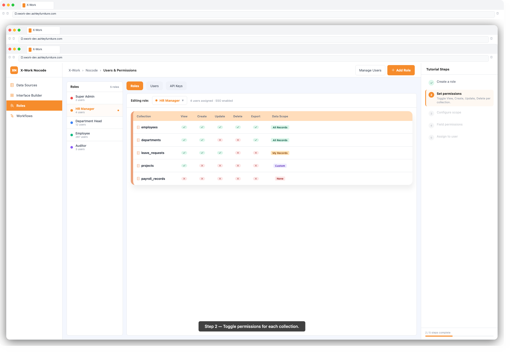
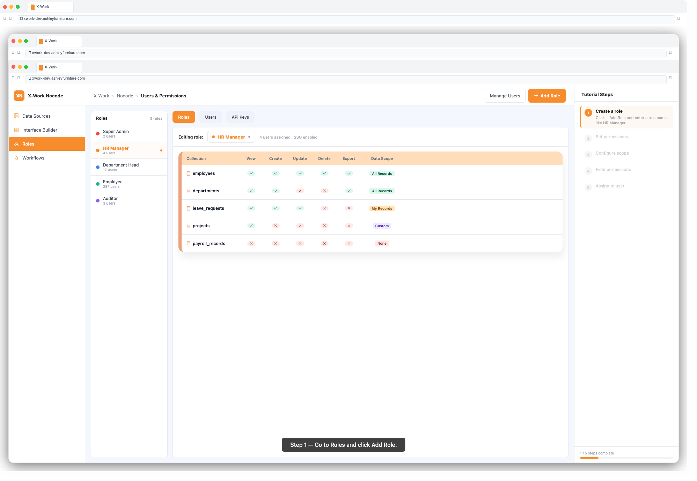

The Users & Permissions module gives administrators precise control over who can access what in X-Work. Using Role-Based Access Control (RBAC), you define roles with specific resource permissions, then assign those roles to users. This ensures every team member sees exactly what they need — and nothing more.
| Term | Meaning |
|---|---|
| User | An individual with a login account in X-Work |
| Role | A named set of permissions (e.g. "Manager", "Read-Only Viewer") |
| Resource | A collection, page, or system feature that can be accessed |
| Action | An operation on a resource (read, create, update, delete) |
| Scope | A data filter that limits which records a role can see/edit |
| Field Permission | Control visibility of specific fields within a collection |
1. Log in with an administrator account
2. Navigate to Settings → Users & Permissions
3. You will see two tabs: Users and Roles
1. Click the Users tab
2. The list shows all registered users with their roles and status
1. Click + Invite User
2. Enter the user's email address
3. Select one or more roles to assign
4. Click Send Invitation — the user receives an email with a login link
1. Click a user's name in the list
2. Update their name, email, or role assignments
3. Click Save
1. Click a user's name
2. Toggle Status to Disabled
3. Click Save — the user can no longer log in but their data is retained
1. Click the Roles tab
2. Click + Add Role
3. Enter a Role Name (e.g. HR Manager, Read Only, Finance Team)
4. Optionally add a description
5. Click Confirm
1. Click the role name to open its permission configuration
2. You will see a list of all collections and system resources
For each collection, you can enable or disable the following actions:
| Action | Description |
|---|---|
| View | Read records in this collection |
| Create | Add new records |
| Update | Edit existing records |
| Delete | Remove records |
| Export | Download data |
| Import | Upload data |
To set permissions:
1. Find the collection in the list
2. Toggle each action on or off
3. Click Save

Data scope limits which records a role can see or edit, even if the action is permitted.
1. Next to an action (e.g. View), click Scope
2. Choose a scope option:
Created By = current user)Status = Approved AND Region = Asia)3. Build the condition using the filter builder
4. Click Save

For sensitive fields, you can hide or make them read-only per role:
1. Next to a collection, click Field Permissions
2. A matrix shows all fields with columns for View and Edit
3. Toggle each field:
4. Click Save
Control which roles can access which pages:
1. Navigate to Settings → Menus
2. Right-click a page or menu item → Configure Permissions
3. Select which roles can see this menu item / access this page
4. Click Save
1. Go to Settings → Users & Permissions → Users
2. Click a user's name
3. In the Roles field, click to add or remove roles
4. Click Save
A user can have multiple roles. Their effective permissions are the union of all assigned roles.
1. Navigate to Settings → Authentication → Password Policy
2. Set minimum length, complexity requirements, and expiry period
1. Navigate to Settings → Authentication → SSO
2. Select the SSO provider (Azure Entra, SAML, CAS)
3. Enter the provider's configuration details (Tenant ID, Client ID, Client Secret)
4. Click Enable and Save
1. Navigate to Settings → Authentication → MFA
2. Toggle Enable MFA on
3. Select supported methods (Authenticator App, SMS)
4. Set whether MFA is required for all users or specific roles
For system integrations that need programmatic access:
1. Navigate to Settings → API Keys
2. Click + Generate API Key
3. Enter a name and set an expiry date
4. Copy and securely store the generated key (it is shown only once)
5. Assign a role to the API key to control its access level
X-Work includes the following default roles:
| Role | Description |
|---|---|
| Admin | Full access to all settings, data, and configuration |
| Member | Standard access — can view and interact with permitted resources |
| Read Only | Can view data but cannot create, edit, or delete |
You can modify or extend these roles, or create additional roles to match your organization.
| Issue | Solution |
|---|---|
| User cannot see a page | Check role's menu permission for that page |
| User can see records they shouldn't | Review the data scope setting for that role |
| Field not appearing in form | Check field-level permissions — View may be disabled |
| SSO login failing | Verify Tenant ID and Client Secret are correctly entered |
| API key returns 403 | Check the role assigned to the API key has the required action permissions |